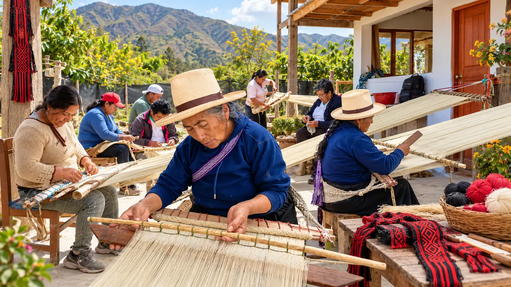

Talleres de tejido tradicional
Desarrollo de talleres participativos orientados a fortalecer las habilidades y técnicas tradicionales de tejido de las mujeres de Duraznopampa.
PROYECTO DESARROLLADO DESDE 2024
Duraznopampa, Chachapoyas, Amazonas, Perú

El proyecto Tejiendo Identidad y Saberes Ancestrales busca fortalecer y preservar las técnicas tradicionales de tejido de la comunidad de Duraznopampa, en la región Amazonas.
A través de talleres participativos, promovemos el fortalecimiento de las capacidades artesanales, la recuperación de saberes tradicionales y la continuidad de las prácticas textiles que forman parte de la identidad cultural de la comunidad.
La iniciativa reconoce el papel fundamental de las mujeres en la transmisión de los conocimientos ancestrales y promueve oportunidades económicas vinculadas a la producción artesanal.
Fortalecer y preservar las técnicas tradicionales de tejido de la comunidad de Duraznopampa mediante la recuperación y transmisión de conocimientos ancestrales, el fortalecimiento de capacidades artesanales y la promoción de oportunidades económicas vinculadas a la producción textil.
Desarrollo de talleres participativos orientados a fortalecer las habilidades y técnicas tradicionales de tejido de las mujeres de Duraznopampa.
Promoción de la recuperación, preservación y transmisión de los conocimientos textiles tradicionales que forman parte de la identidad cultural de la comunidad.
Fortalecimiento de los conocimientos y habilidades artesanales de las mujeres participantes, promoviendo la continuidad de la producción textil tradicional.
La iniciativa está dirigida a 12 mujeres de la comunidad de Duraznopampa, promoviendo su participación activa en la conservación del patrimonio cultural inmaterial.
El proyecto busca fortalecer sus conocimientos y habilidades artesanales, contribuyendo a la continuidad de las prácticas textiles tradicionales y al desarrollo de oportunidades económicas vinculadas a la producción artesanal.
De acuerdo con la información proporcionada por Acobia Perú, el proyecto ha beneficiado a 12 mujeres de la comunidad mediante el fortalecimiento de sus conocimientos y habilidades en técnicas tradicionales de tejido.
La iniciativa contribuye a la preservación de los saberes textiles ancestrales y a la continuidad de las prácticas artesanales que forman parte de la identidad cultural de Duraznopampa.
En Acobia Perú promovemos iniciativas orientadas a la conservación del patrimonio cultural y al fortalecimiento de las capacidades de las mujeres de comunidades locales.
Conoce nuestros proyectos y oportunidades de cooperación para contribuir a la preservación de los conocimientos tradicionales.
Conocer nuestros proyectos